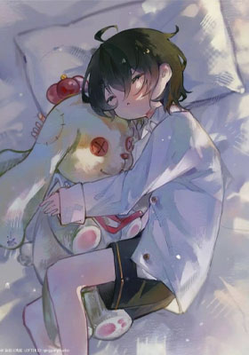

О чём эта история
Сюжет
Фокусник Цзун Цзю, потерявший возможность выступать на сцене, внезапно оказывается в мрачной реальности романа ужасов, где всё вращается вокруг шоу на выживание. Заменив участника, обречённого погибнуть в первом же раунде, он вступает в жестокую игру, где из десятков тысяч лишь сотня сможет дойти до финала. Победитель получит уникальный приз — билет, исполняющий любое желание.
Любой другой на его месте, вероятно, был бы напуган до смерти. Но Цзун Цзю сумел не просто сохранить хладнокровие, а превратить своё участие в сенсацию, беззастенчиво демонстрируя свои фокусы и ловкость.
Стоило ему обрести относительную безопасность и наладить жизнь, как на него обратил внимание главный злодей романа.
«Сегодня ты пытаешься добраться до меня, завтра я верну тебе должок, это довольно весело, хе».
То, что начиналось как простая игра, вскоре вышло из-под контроля. Они зашли слишком далеко, стирая границы между борьбой и одержимостью.
Теперь, оказавшись прижатым к земле заклятым врагом, Цзун Цзю лишь лениво поднял взгляд.
— Хочешь убить меня? Убей. Не трать время на болтовню.
Даже находясь в безвыходном положении, он не проявлял ни капли страха, лишь продолжая нагло провоцировать своего противника.
Мужчина провёл ледяным пальцем по коже молодого человека, но, дойдя до шеи, неожиданно замер.
— Какая жалость. Я передумал.
***
Когда-то он был готов собственноручно лишить Цзун Цзю жизни. Каждый день он сожалел о том, что не уничтожил его, не разорвал плоть и не сломал шею. Но стоило этому человеку оказаться в его власти, как в душе, вместо жажды убийства, проросло другое, гораздо более мучительное желание.
Теперь победа или поражение отошли на второй план. Гораздо сильнее он хотел видеть его сломленным: плачущим, задыхающимся, умоляющим о пощаде с покрасневшими от слёз глазами.
Что такое «Бесконечный поток»?
Это поджанр китайской литературы, где герой попадает в систему смертельных испытаний. Каждое испытание — это отдельный «инстанс» (уровень) со своими правилами, монстрами и наградой. Выжившие получают силы, проигравшие — умирают. «Стажёр ужасов» — один из лучших представителей этого жанра.
«Он занимает место пушечного мяса, которое должно погибнуть в первом же раунде. Однако вместо страха он использует свои навыки иллюзиониста, хладнокровие и отсутствие здравого смысла, чтобы не только выжить, но и стать сенсацией. Его замечает главный злодей — загадочный "Инструктор", и между ними завязывается опасная игра на грани жизни и смерти». — Из описания цикла
Почему новелла стала бестселлером?
- Умный, харизматичный и нестандартный главный герой-фокусник
- Запутанный сюжет с постоянными неожиданными поворотами
- Мрачная, но атмосферная эстетика хоррора
- Острые и напряжённые отношения между главными героями
Интересные факты
- Новелла входит в топ лучших произведений в жанре «бесконечный поток»
- Переведена на множество языков, включая русский
- Имеет огромную фан-базу в России и странах СНГ
📌 О проекте

Этот сайт создан в рамках курсовой работы по дисциплине «Веб-программирование».
Тема: «Разработка адаптивного сайта по мотивам новеллы "Стажёр ужасов"».
Автор: Лецкая Эльвира, группа 2-ТИД-10
Автор новеллы: Oksiji (惊悚练习生)
По мотивам произведения «Стажёр ужасов» (также известно как «惊悚练习生»).